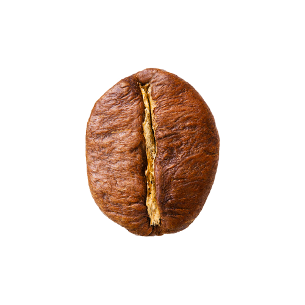

Two types of coffee beans

Arabica
- Origin:
- Ethiopia
- Time to blossom:
- 7-9 months
- Taste:
- Sweeter & softer
- Caffeine:
- 0.8%-1.5%
- Altitude:
- 800-1,200 m

Robusta
- Origin:
- Kongo
- Time to blossom:
- 9-11 months
- Taste:
- Stronger & harsh
- Caffeine:
- 1.7%-3.5%
- Altitude:
- 0-900 m
Roast Level
Light Roasts
Light roasts are coffee beans that are roasted for a shorter
amount of time, resulting in a light brown color and a
light-bodied coffee. Due to the shorter roasting time, light
roasts retain more of the original flavor of the coffee bean.
Light roasts tend to have fruity or citrus notes and a higher
acidity, along with higher caffeine content. They are an
excellent choice if you want to emphasize the bean's original
flavor in your recipes or brew a bright cup of coffee to start
your day.
Medium Roasts
Medium roasts are coffee beans that are roasted for a longer
time than light roasts but not as long as dark roasts. They
have a medium brown color and a medium-bodied coffee with a
more balanced flavor profile. As roast temperature increases,
the coffee beans begin to lose their acidity. Medium roasts
are a common choice for brewed coffee due to their balanced
flavor profiles, pairing well with beans of the Arabica and
Excelsa varieties.
Dark Roasts
Dark roasts are coffee beans that are roasted for a longer
time at higher temperatures, resulting in a dark brown color
and a full-bodied coffee with a robust flavor profile. Dark
roasts are a great option for delivering intense, rich flavor
to recipes, pairing well with beans of the Arabica variety.
However, due to the longer roasting time, dark roasts have
lower acidity and lower caffeine content compared to light and
medium roasts.